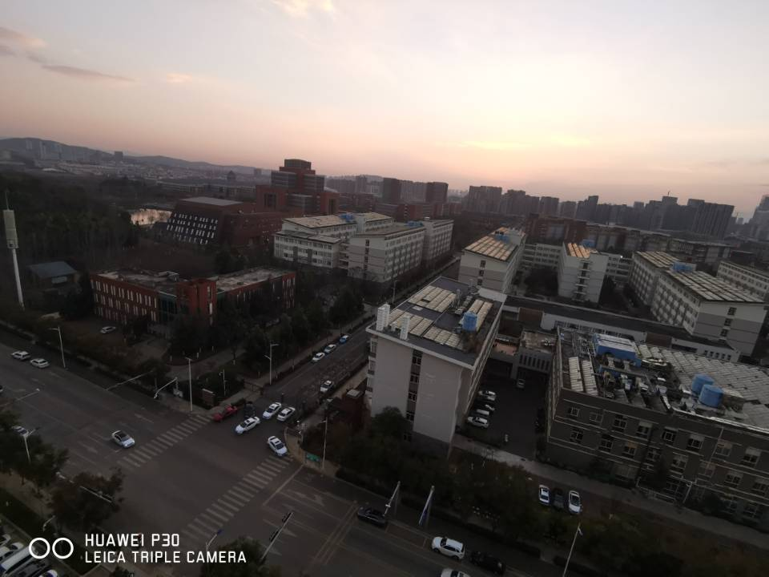
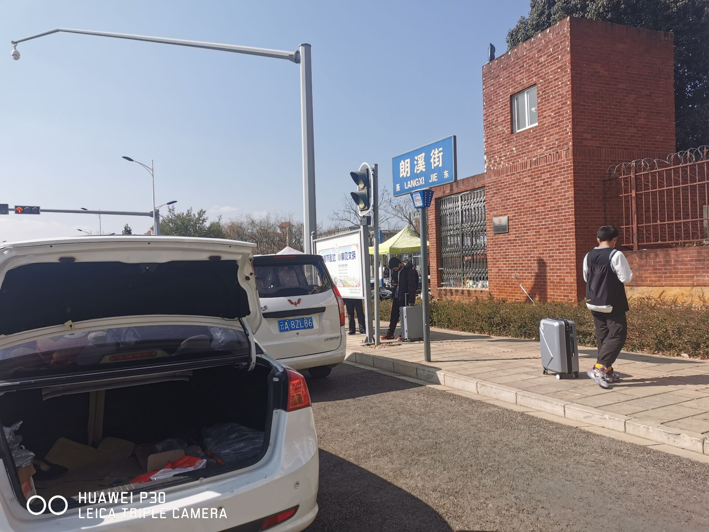
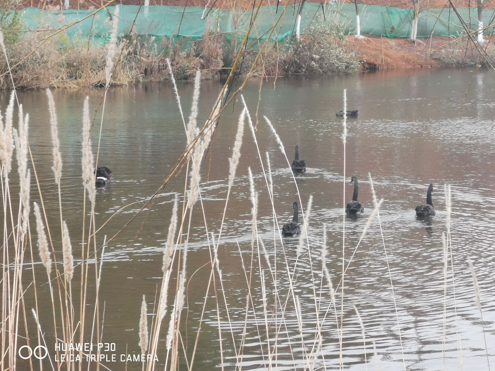
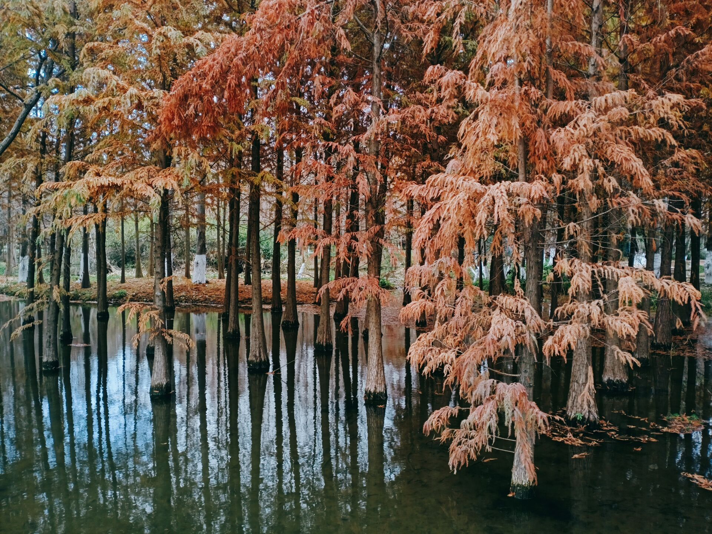
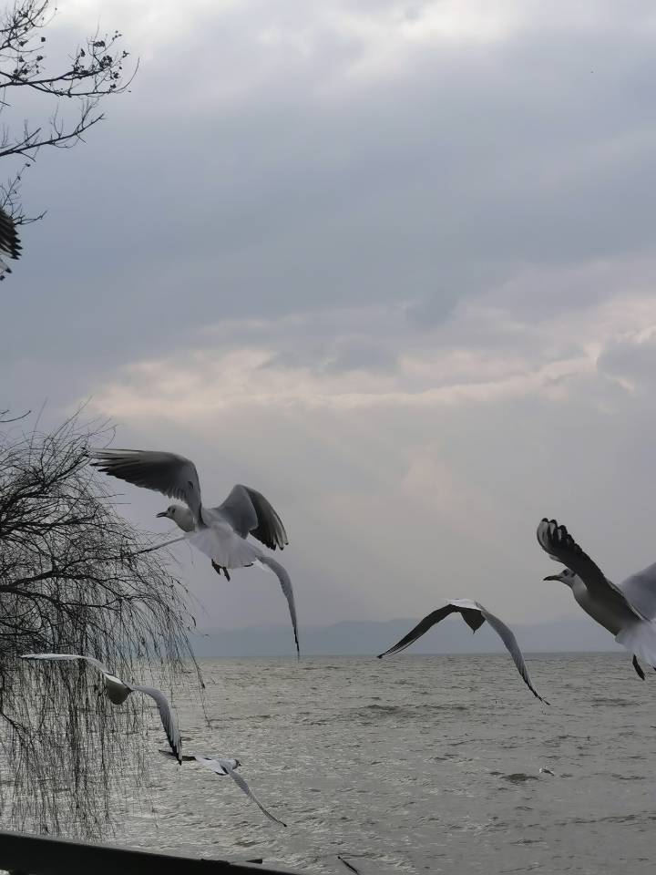
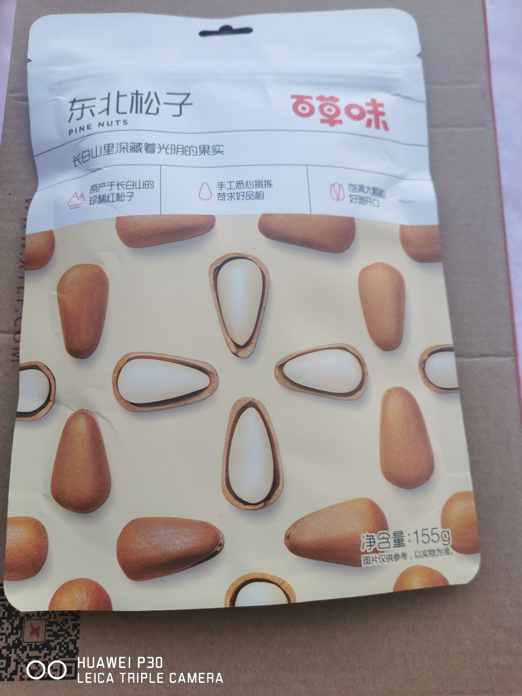

有些时候，我只是不经意看见网上说异地一定要见面，就下定决心去见你，有些时候，只是从敏感地区回来，怕给你不安，就下定决心推迟去见你，22号我坐高铁下去找你，路上我听了老杨谈谈的四个节目，遇到了哭泣的小女孩，我走出高铁站的时候，你正好考完，你开会了会，

我怕你你紧张，就先去换书先见一下，后来你说你来找我吧，怕我找不到，我就骑着电动车，不一会儿就到了你门口

，等着你睡醒，你睡醒觉得有些突然，我就转了转，你出来的时候，光光和pp跟着，我其实很紧张，半年没见了，我们只互相看了一眼。很深情。我忘不了你的那个眼神，你给我买了农夫山泉，口罩，把书交给了我，到了晚上，我们决定去仕林街，我在门口等你，还背对假装没看见你，结果你看出我了，我给你买了饮料，饮料掉了，才开始走那会儿我特别紧张，我掏出绿箭给你，我们说起了游泳馆，说起了你的舍友，我的家人，你的家人，我们逛仕林街的时候，你说起了你哥，我们见到了你们上次看电影的地方，你买了烧烤给室友，人群总是把我们打散，我想，要是牵着就不会了，回去的时候，我问你牵吗？你想了一下，于是，我第一次牵女生的手，你第一次牵我的手，我们甩着手，不说话也挺好，就这样牵着走,牵手的时候，有车来了，你就很紧张的给我拉过去了。在门口的时候，挺舍不得的，你让我回去给你发消息，第二天，我们一起看最强大脑，天气有些阴，本来说不去了，有些时候，就觉得来不及也没事，就下定决心带你去，我在门口等你，你还有一段时间，我不小心就进去了你们校园，看见了黑天鹅，

在图书馆看了看，你说你来找我，让我下去，你先看见了我，我打了车，车等着我们，我给你开门，我们去捞鱼河，路上我把你牵着，我们看到了云南白药，看见了高大的建筑物，我们迷失在郊外，到了捞鱼河，我们扫健康码进去了，我给你买了奶茶，是一种奇怪的热奶茶，开始我们走错了，但看见了凉粉和菜，我们找到了海边，

捞鱼河，海声，微风，阳光，水杉，海鸥，芦苇，流水，四叶草，沙滩路，观景台，木板小道，我们去了观景台，我扫了一下码，看了一会儿，我们拍了照，我们找四叶草，在要离开的时候才找到一颗，我们拍海鸥，看老人们做游戏，我们牵着，走着，我们看见了水杉

，看见了喂海鸥的阿姨，扫地的阿姨，看见了双人自行车，捞叶子的大叔，你说起了你的班主任，我们打车回去了，送你到门口，我回去换了衣服，我在门口等你，我们打车去了万达，我们到了四楼，拉着你的手，转了一圈才发现要找的店在起点，我拉着你进去，很快点了餐，你坐在我的对面，有一个饼，有鱼，鱼没有刺，我们没有吃多少，你先给我夹的菜，我们多吃了一会儿，拉着你去了旁边的电影院，取票，核验，我们踩着点进去了电影院，你左边有孩子，我们看了许愿神龙，时不时笑一下，我时不时会看你一下，结束了，我们买了糖葫芦，一人一串，我拉着你，去等车，等了有一会儿，在车上我把你的指纹录进了我的手机，还用我的手机给你的充电，司机没有直接到憬园门口，我们走了一会儿，你进去了，任然是舍不得，我走路回去，回去我们聊了一会儿，你和小范说了一下话，你说她很喜欢我买的糖葫芦，第三天，我到了门口，直接进去了，我坐在你宿舍下面超市对面乘凉，等着你睡醒，等了一会儿，你带着我去转，我们去到了大草坪，大台阶，在哪里，我出汗了，我们去到了图书馆，你说有人在哪里看夕阳，我们去到了红廊，我们去了西北教学楼那附近，在一个亭子哪里坐下来休息，我们回去红廊哪里，我洗了个手，为了重新牵你的手，发现你也出汗了，我们回到你的宿舍门口，我给你拉行李箱，我们打车，到了高铁站，我们找了个位置坐了下来，我们一起听歌，看见了可爱的小孩子，我们准时进了站台，你给我看你的数分成绩，当时很为你高兴，专门去牵你的手，上了高铁，我们调了一下座位，做到了一起，我拿出了花生和松子

，后来，人上人下，我暂时去了后面坐，后来，大哥下站了，我又重新回来和你做， 5.快到站的时候，换着牵你的手，还使劲捏了下，出汗也舍不得放
，后来发现高铁不在南华停，我只能先下了，在出站口，你爸和你走出去，你回头找我身影哪一个瞬间，有些惊恐，有些舍不得，令人心疼，忘不掉。我拿出小狗，很难过，像失去了一个人，三天的相处结束了，习惯了你在我身边，习惯了牵着你的手，喜欢你，融入了我的记忆中。谢谢你给了我最美好的回忆！